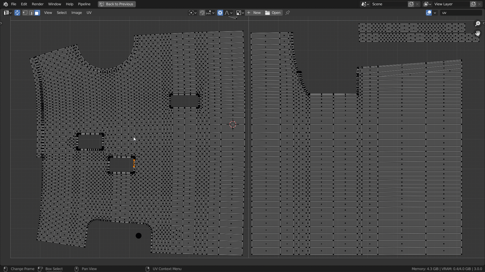
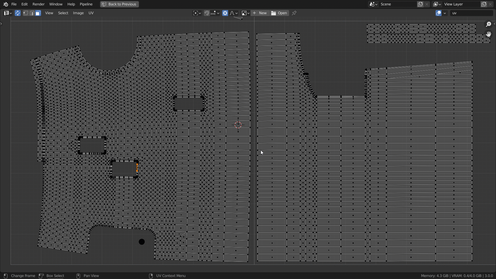
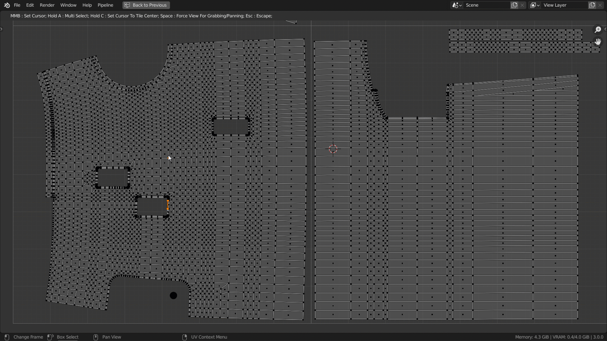

- Docs »
- UV Editor shortcuts and usage
-
UV Editor shortcuts and usage
Invoke key
- Pressing 'D' key invokes change 3D Cursor position. Works for uv points and edges. To set 3D Cursor to poly center it's better use multiselection.
- !WARNING The addon works hard with heavy poly meshes (>50000).
Main mode
- Press D + MMB - To set 3D Cursor to highlighted.

Multiselection
- Press D + A + MMB - To activate multi selection for 3D Cursor.
- If release A - To set(confirm) Cursor between selection.
- If release D - To exit the mode without confirmation.

Additional shortcuts while holding D key
- Press C - To set 3D Cursor to current(under mouse) uv tile center.

- Space - Force addon to use MMB for grabbing or panning a view not for action confimation.